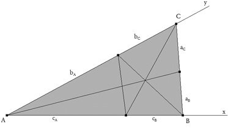
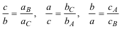
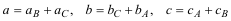
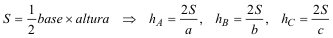
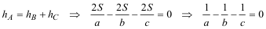
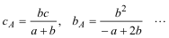
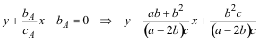
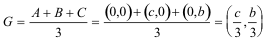
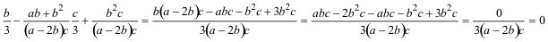

Propuesto por Ricard Peiró i Estruch Profesor de Matemáticas del IES 1 de Xest (València) Problema 317 Sean ha hb hc, las tres alturas del triángulo ABC tales que ha =hb+hc. La recta que pasa por los pies de las bisectrices interiores de los ángulos B y C pasa por el baricentro del triángulo. Oposiciones Ibiza 2002. Solución de José María Pedret, Ingeniero Naval. Esplugues de Llobregat (Barcelona). (2 de julio de 2006) |
|
SOLUCIÓN |
|
Dibujamos un triángulo ABC, sus bisectrices y los segmentos que éstas determinan en los lados.
 figura 1 TEOREMA DE LAS BISECTRICES
 LADOS DEL TRIÁNGULO
 ÁREA DEL TRIÁNGULO
 CONDICIÓN DEL ENUNCIADO
 EXPRESIÓN DE LOS SEGMENTOS QUE DETERMINAN LAS BISECTRICES EN FUNCIÓN DE LOS LADOS Con los datos anteriores obtenemos
 RECTA POR LOS PIES DE LAS BISECTRICES En unos ejes oblicuos la recta pasa por el punto (cA,0) y el punto (0,bA) lo que nos da la ecuación de la recta como
 BARICENTRO
 SUSTITUIMOS LAS COORDENADAS DEL BARICENTRO EN LA RECTA
 CONCLUSIÓN G está sobre la recta (c.q.d.) |